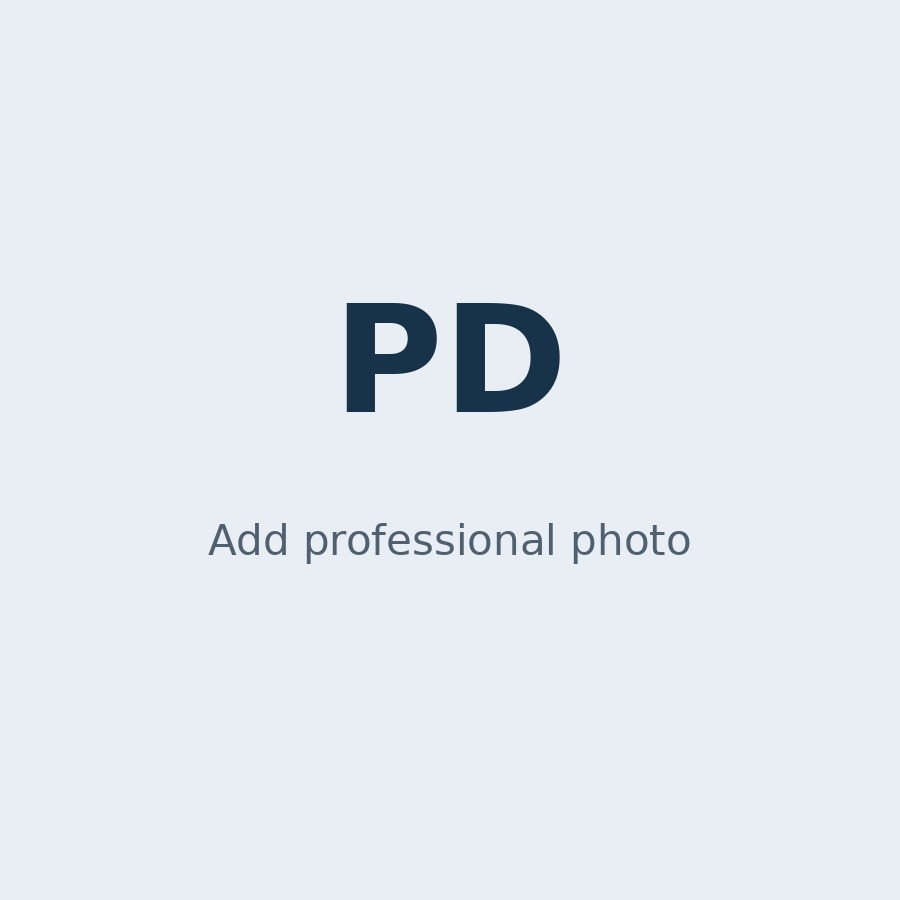

TELECOMMUNICATIONS • NETWORK ENGINEERING • OPERATIONS
Pritom Datta
Telecommunications & Network Engineer
9+ years of experience across optical transmission, DWDM/OTN, IP/MPLS networks, NOC operations, submarine cable systems and nationwide telecommunications infrastructure.

01 / ABOUT
Engineering reliable networks and critical infrastructure.
Telecommunications and Network Engineer with 9+ years of experience in DWDM/OTN transmission systems, submarine cable operations, IP/MPLS networks and nationwide telecom infrastructure.
Experienced in multi-vendor environments including Huawei, Ciena and NEC, with a focus on incident management, network reliability, service delivery and operational optimisation.
02 / CORE EXPERTISE
IP Networking
Network Operations
Vendors & Platforms
Infrastructure
Service Operations
03 / PROFESSIONAL EXPERIENCE
Apr 2024 — Present
Assistant Manager – Transmission
Bangladesh Data Center Company Limited
- Manage nationwide optical transmission operations and service availability.
- Monitor and troubleshoot DWDM/OTN infrastructure in multi-vendor environments.
- Lead incident response, root cause analysis and escalation management.
- Support network capacity planning, transmission expansion and service onboarding.
Nov 2022 — Apr 2024
Sr. Deputy Director – Head of Service (IT Products)
Walton Digi-Tech Industries Ltd.
- Led nationwide technical service operations across 83 service locations and 43 product categories.
- Managed service performance, operational KPIs and customer escalations.
- Implemented Kaizen and 6S methodologies to improve operational efficiency.
Nov 2020 — Oct 2021
Executive Engineer
Square Pharmaceuticals Limited
- Managed operation and maintenance of industrial pharmaceutical equipment.
- Developed preventive maintenance schedules and technical SOPs.
Dec 2018 — Nov 2020
Assistant Manager – NOC
Bangladesh Submarine Cable PLC
- Managed 24/7 NOC operations for the SMW-5 international submarine cable system.
- Monitored telecom infrastructure using EMS/NMS platforms across NEC and Ciena environments.
- Supported service provisioning, network maintenance and operational continuity.
Oct 2016 — Dec 2018
Jr. System Engineer – NOC
Bangla Phone Limited
- Monitored and troubleshot telecom network infrastructure using NMS and CLI tools.
- Supported nationwide SDH, OTN, STP and DWDM network operations.
04 / EDUCATION & CERTIFICATIONS
Academic foundation with continuous technical development.
M.Sc.
Electrical & Electronic Engineering
Bangladesh University of Engineering and Technology (BUET) · 2023
B.Sc.
Electrical & Electronic Engineering
Bangladesh University of Engineering and Technology (BUET) · 2016
Certifications
- Oracle Cloud Infrastructure 2025 Certified Networking Professional
- Oracle Cloud Infrastructure 2025 Certified Architect Associate
- Kaizen Approach – Lean Methodology for Continuous Improvement
05 / CONTACT
Let's connect.
For professional opportunities, research discussions and technical collaboration, please feel free to get in touch.